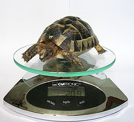

|
¿CÓMO DESPERTAR A LAS
TORTUGAS TRAS LA HIBERNACIÓN?
Klara Tuset, 2005
Para despertar de la hibernación debe producirse un aumento drástico y
rápido del calor, nunca gradual. Por ello, el mes de marzo suele ser
el escogido para realizar esté proceso. Si se despierta antes a la
tortuga, porque es un ejemplar juvenil por ejemplo, hay que tener
preparado un recinto acondicionado para mantener al animal hasta que
suban las temperaturas de forma natural. Si la tortuga se encuentra en
un régimen de semi-libertad (un jardín, por ejemplo) saldrá a
asolearse a mediodía y permanecerá un largo rato absorbiendo calor. Su
única actividad durante los próximos días será calentarse todo el
tiempo posible en un lugar resguardado del viento y orientado al sur.
Ella sola se encargará de encontrar el lugar adecuado.
Testudo Marginata asoleándose
(Salvador Laguna).
Durante las noches o los días fríos se enterrará en una zona asoleada,
ya que a cinco centímetros por debajo de la superficie de la tierra se
encontrará a temperaturas entre 5 y 15º C más altas que en la
superficie.
De todos modos, si es posible no está de más combinar su asoleamiento
natural con algún foco artificial durante los primeros días, sobre
todo para ayudar a que comience a comer lo antes posible y recupere
fuerzas.
Las tortugas que han sido hibernadas artificialmente deben despertarse
una vez tengamos acondicionados sus recintos de primavera-verano o, si
se mantienen sueltas en un jardín, cuando estemos seguros de que las
temperaturas van a estar por encima de los 20 grados durante los
periodos de asoleamiento de más calor (mediodía).
Lo primero es preparar un recipiente con agua tibia (sobre los 30
grados) que cubra al animal hasta las placas marginales. La tortuga
podrá hidratarse tanto por la boca como por la cloaca y debemos
mantenerla en el baño durante 20-30 minutos.
Después, deberemos facilitarle un foco de calor y mantenerla de manera
constante a temperaturas entre 26 y 32ª C para que empiece a comer.
Una tortuga recién despertada rechaza la comida durante un par de días
y no muestra signos de ninguna enfermedad no debemos preocuparnos por
ello.
Sin embargo, es de vital importancia suministrarle grandes cantidades
de agua para que elimine todas las toxinas que ha acumulado durante la
hibernación. Para ello ofreceremos estos largos baños de agua tibia
todos los días durante una semana completa.
Al cabo de un par de días comienzan a comer con toda normalidad y la
ganancia de peso suele ser espectacular. Hay que emplear esta
temporada en conseguir que el animal coma todo lo posible, ya que con
la llegada del verano volverá a disminuir su apetito debido a la
estivación.
|

Pesaje de un juvenil de Testudo
graeca (Marcos Martínez). |
Ejemplar de Testudo
hermanni tomando un baño (Maria José
Navarro). |
Posibles problemas posthibernación.
La pérdida de peso propia de la hibernación se recupera rápidamente en
cuanto despiertan, ya que a las pocas semanas de salir del letargo
recuperan un apetito voraz. Tan importante como la comida es el agua,
que no debe faltar en este momento.
El debilitamiento del sistema inmunológico que se produce durante la
hibernación puede propiciar el desarrollo de las siguientes
enfermedades. Sin embargo, la mayoría de tortugas no presenta ningún
problema y necesita del letargo para seguir su ritmo biológico, por lo
que no hay que temer la hibernación ni evitarla sin un motivo
justificado.
• Anorexia posthibernación: Cuando una tortuga sale de la hibernación
su principal necesidad no es comer, sino asolearse para conseguir la
temperatura adecuada para el funcionamiento normal de su organismo y
beber mucha agua para hidratarse y eliminar toxinas. Por eso, no
debemos asustarnos si rechaza los alimentos durantes un par de días
tras la hibernación. Las tortugas y otros reptiles emplean un
mecanismo especial para salir de la hibernación: su hígado libera las
reservas de glucógeno que ha ido acumulando durante el verano, lo que
provoca un aumento del nivel de glucosa en la sangre. La glucosa sirve
de “energía extra” para el animal, por lo que la tortuga debe empezar
a comer antes de que se acabe su reserva de glucosa, ya que una vez
agotada el animal se queda sin energías para comer, moverse o realizar
cualquier actividad. La falta de apetito de las tortugas recién
despertadas no debe superar los 10 días. Si esto sucediera deberá
llevarse al animal a un veterinario lo más rápido posible.
• Estomatitis: se trata de una infección por gérmenes que se
manifiesta con la aparición de placas purulentas en las mucosas del
interior de la boca. Requiere atención veterinaria y limpiezas de la
zona con Betadine© diluido en tres cuartas partes de agua.
• Infestación de parásitos intestinales: el debilitamiento del sistema
inmunológico del animal y el aumento de las temperaturas es
aprovechado por los parásitos internos para reproducirse en cantidades
masivas. Se reconoce por la presencia de diarreas, falta de apetito y
debilidad (especialmente en las extremidades posteriores, que son
arrastradas al caminar). Para poder actuar eficazmente es necesario
que el veterinario realice un análisis coprológico y determine el
medicamento más adecuado.
• Ceguera. Las tortugas que han sido mantenidas durante la hibernación
a temperaturas constantes por debajo de los 2º C pueden padecer
cegueras irreversibles debido a la congelación del líquido humoral los
ojos. Eso no quiere decir que un animal que haya estado en un momento
concreto a temperaturas bajo los dos grados (una noche más fría de lo
habitual, por ejemplo) vaya a sufrir este tipo de problema. La ceguera
se reconoce porque el animal suele caminar constantemente en círculos
y no advierte los obstáculos.
|